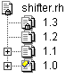

A versioned file is a file and its revisions that exist under version control. Each versioned file is associated with one workfile. When you add a file to a project database, Serena ChangeMan Version Manager creates a versioned file, and the initial version of the file becomes its first revision. As you check in subsequent versions of the workfile, each version becomes a revision of the versioned file. For instance in the graphic below, the versioned file "shifter.rh" has four revisions: 1.0, 1.1, 1.2, and 1.3.

The versioned file maintains information about the name and location of the archive where its revisions are physically stored. When you add a file, Version Manager automatically creates and stores the archive in the archive location defined by the project or project database.
| Adding Workfiles | About Revisions |
| About Archives |